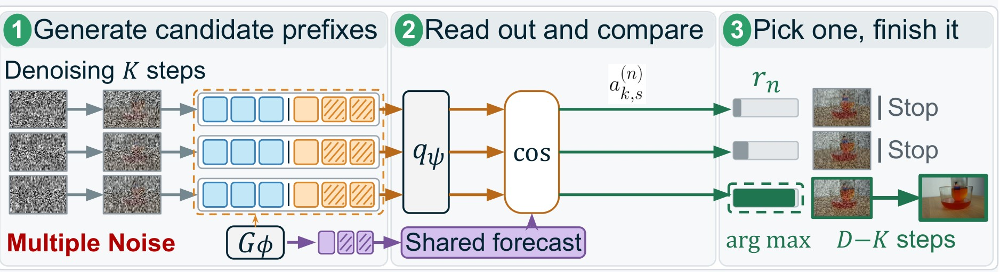
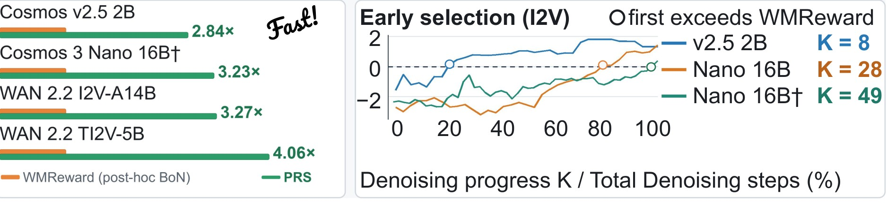
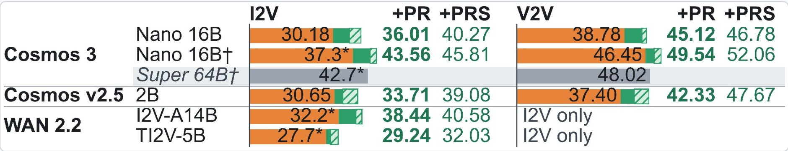

Backbone vs. Physical Registry
Each pair starts from the same conditioning input: the pretrained Cosmos 3 Nano 16B backbone on the left, the same backbone with the Physical Registry on the right. These are the full 5 s generations behind Figure 3 in the paper.
Robotics, driving and natural scenes
Generations from Cosmos 3 Nano 16B with the Physical Registry for WorldModelBench prompts, the examples shown in the paper's appendix. Each clip starts from the benchmark's first frame and text instruction.
Motion transfer
We replace the forecast in the Physical Registry with JEPA encoder features of the motion source, keeping the initial frame, prompt, and noise fixed.
Where should predictions of scene evolution live?
Problem
Existing video generation models jointly encode appearance and dynamics in video tokens, limiting independent control of dynamics.
Q. Where inside the generator should predictions of scene evolution live?
Our answer: Physical Registry
- 1Dedicated
- 2Forecast-initialized
- 3Future-supervised
- 4Readable slots that co-evolve with video tokens
Forecast-initialized slots co-evolve with video tokens
Physical Registry represents the forecast in a fixed set of dedicated registry slots that carry predictive features alongside the video latent rather than within it.

1Dedicated & co-evolving
Temporally grounded registry slots inside the video DiT co-evolve with video tokens through the shared DiT blocks.
2Forecast-initialized
Registry slots are initialized from an observation-conditioned forecast of a JEPA encoder and predictor Gφ.
3Future-supervised & readable
A registry reader is supervised with future-representation features (ℒalign), making predicted dynamics an explicit, readable state.
4Read out at inference
At inference, the same registry provides readouts used for the Physical Registry Selector (PRS) score.
A dedicated predictive state gives the largest gain
Controlled comparison on Physics-IQ Verified with Cosmos v2.5 2B. Center-view training ⇒ held-out left / right view evaluation.
| Variant | Mechanism | Registry | Alignment | Readout | I2V | Δ | V2V | Δ |
|---|---|---|---|---|---|---|---|---|
| Vanilla fine-tuning | – | ✗ | ✗ | ✗ | 41.3 | – | 46.4 | – |
| REPA | Feature alignment | ✗ | ✓ | ✗ | 41.8 | +0.5 | 46.9 | +0.5 |
| Cross-attention | External context | ✗ | ✗ | ✗ | 43.1 | +1.8 | 49.2 | +2.8 |
| AdaLN | Feature modulation | ✗ | ✗ | ✗ | 45.1 | +3.8 | 48.3 | +1.9 |
| Joint generation | Joint denoising | ✗ | ✓ | ✗ | 45.1 | +3.8 | 48.0 | +1.6 |
| Registry only | Dedicated predictive state | ✓ | ✗ | ✓ | 45.0 | +3.7 | 50.3 | +3.9 |
| Physical Registry | Dedicated predictive state | ✓ | ✓ | ✓ | 51.2 | +9.9 | 55.1 | +8.7 |
A dedicated registry improves physical plausibility, while future supervision on the registry yields the largest gain among variants.
Physical Registry Selector (PRS)
Select a future from registry states before full denoising. Candidates share the same forecast initialization, are ranked from registry readouts over a K-step prefix, and only the selected trajectory continues for the remaining D−K steps.

2.84–4.06× end-to-end speedup over post-hoc best-of-N selection
At default PRS settings: +5.6–15.9% I2V over each backbone's own Plain baseline (4 backbones).

Physical Registry lifts Physics-IQ Verified on all 4 backbones
Physics-IQ Verified · physical plausibility. Orange = backbone (Plain), green = + Physical Registry (PR), hatched green = + PRS, grey = reference model.

† LLM-expanded prompt · Plain = mean over 10 candidates, or published (*).
WorldModelBench · backbone → + Physical Registry (Δ)
Instruction / physics / common sense (UC Berkeley, NVIDIA et al., NeurIPS 2025)
| Backbone | Physical adherence (0–5) | Total (0–10) |
|---|---|---|
| Cosmos 3 Nano 16B | 4.50 → 4.82 (+0.32) | 8.13 → 8.83 (+0.69) |
| Cosmos v2.5 2B | 4.43 → 4.54 (+0.11) | 8.12 → 8.19 (+0.07) |
| WAN 2.2 I2V-A14B | 4.45 → 4.53 (+0.07) | 8.28 → 8.43 (+0.15) |
| WAN 2.2 TI2V-5B | 4.35 → 4.50 (+0.14) | 8.24 → 8.41 (+0.17) |
EWMBench · Cosmos 3 Nano 16B: backbone → + Physical Registry (Δ)
Robot episodes: scene / motion / semantics, 0–1 ↑ (AgiBot et al., BMVC 2025)
| Metric | Score |
|---|---|
| Scene consistency | 0.855 → 0.895 (+0.040) |
| HSD (motion) | 0.328 → 0.351 (+0.023) |
| NDTW (motion) | 0.305 → 0.378 (+0.073) |
| DYN (motion) | 0.383 → 0.459 (+0.076) |
BibTeX
@article{kim2026physicalregistry,
title = {World Models Need a Physical Registry: Learning Internal
Predictive States for Physically Plausible World Models},
author = {Kim, Shinseong and Jeong, Jaeseok and Fu, Jianlong and Uh, Youngjung},
journal = {arXiv preprint arXiv:2610.16365},
year = {2026}
}